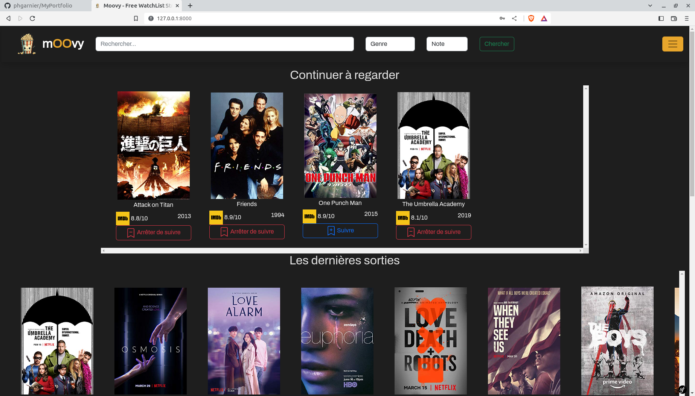

Le projet : Création d'un site web en Full-stack avec Symfony
Nous avons travailler sur la création d'un site web regroupant des series lié à une base de donnée.
Nous l'avons fait en équipe de 5. Ce site est héberger, vous pouvais allez le voir ici .
En résumer ce qu'on a appris :
- Comment s'organiser dans un projet avec la methode agile
- Utilisation des 'normes' Scrum
- Utilisation de git (notamment le board)
- L'utilisation d'un framework php (Symfony 6)
- L'utilisation, modification et mise à jour d'une base de donnée dans symfony
- La création de différent controller ainsi que le côté Front-End
- Le php plus approfodie en symfony
- Création de commande Symfony personaliser
- L'utilisation d'un framework css (bootstrap)
